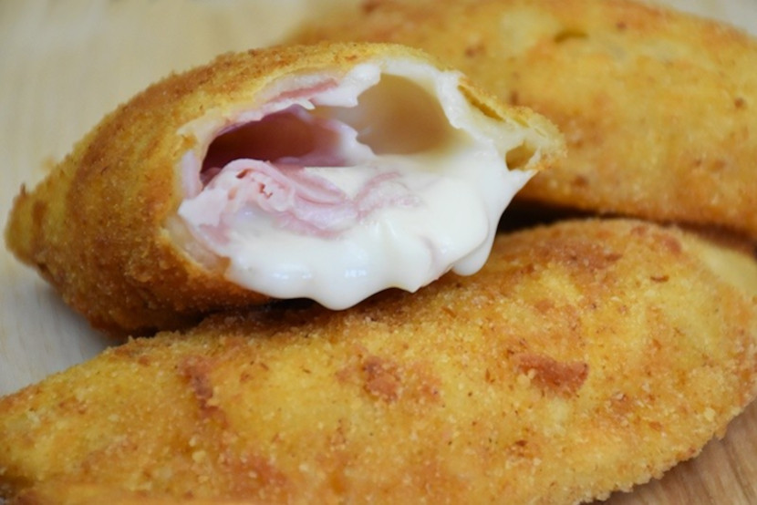

I Sofficiotti
Ingredienti
Di seguito riportiamo gli ingredienti per preparare il nostro piatto
- 250 ml di latte
- Un pizzico di sale
- 200 g di farina setacciata
- 50 g di burro (anche 30 g vanno bene)
- Prosciutto cotto, speck, mozzarella, fontina, besciamella, per farcire a piacere
- Pangrattato, uovo, olio per friggere, per l'impanatura
Preparazione
- In una pentola alta portare a bollore il latte con il burro e regolare di sale.
- Quando il latte avrà raggiunto il bollore, allontanare la pentola dal fuoco e aggiungere tutta la farina setacciata.
- Mescolare con energia gli ingredienti per ottenere un composto duro.
- Trasferire il composto sul piano lavoro leggermente infarinato e far intiepidire. Appena sarà possibile lavorare il composto fino a renderlo liscio ed omogeneo.
- Far riposare il panetto per circa 20 minuti coperto da un canovaccio pulito.
- Trascorso il tempo, infarinare il piano lavoro e dividere l’impasto in 15/20 palline. Stendere le palline con il mattarello e con un coppa-pasta o una tazza ritagliare un cerchio (io ho utilizzato un coppa-pasta con diametro di 11 cm); procedere allo stesso modo con le altre palline. Impastare nuovamente i ritagli e realizzare altri cerchi.
- Farcire le sfoglie a piacere con prosciutto, speck, formaggio, mozzarella tagliati a dadini e unire un cucchiaio scarso di besciamella.
- Chiudere ogni sofficino dando la forma di mezzaluna e sigillare bene i bordi con i rebbi di una forchetta. Per esser certi che i bordi rimarranno ben sigillati anche durante la cottura consiglio di spennellarli leggermente con acqua o albume prima di chiuderli
- In un piatto sbattere l’uovo intero con un pizzico di sale. In un vassoio versare abbondante pangrattato.
- Passare i sofficiotti prima nell’uovo, avendo cura di immergerli completamente, e poi nel pangrattato.
- Sistemare i sofficini su un vassoio e friggerli in olio portato a giusta temperatura per pochi minuti, scolarli e adagiarli sulla carta paglia. Si possono cuocere anche in forno preriscaldato a 180°C per circa 15/20 minuti, devono risultare ben dorati
Visitate la pagina termini e condizioni